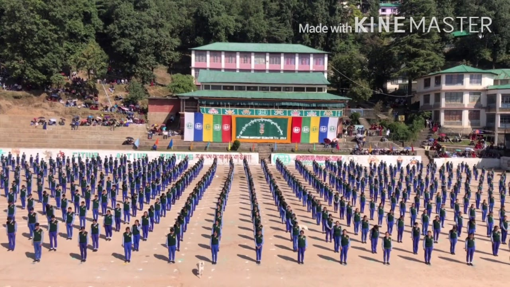
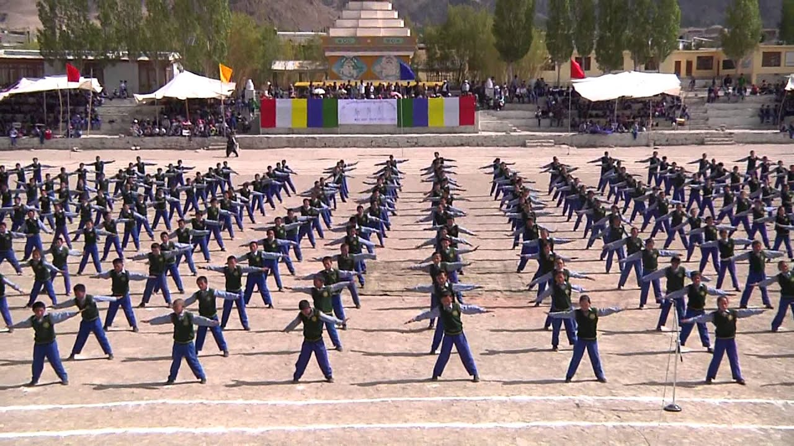
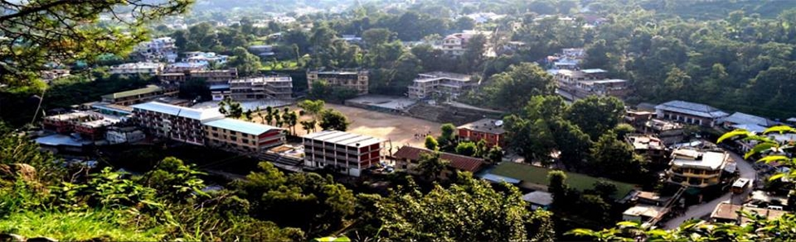
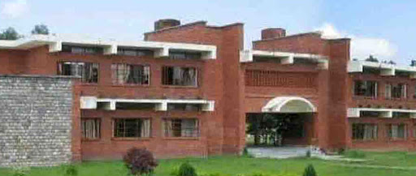
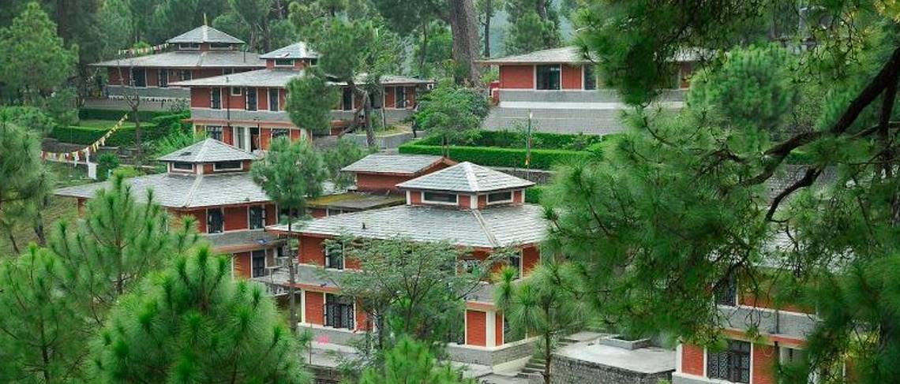
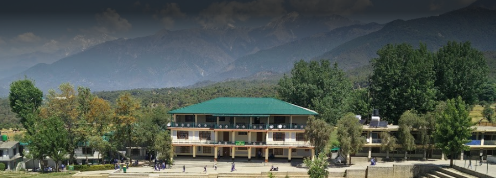
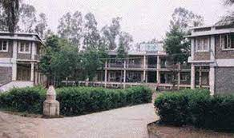

Tibetan Children Village School
Following the Chinese occupation of Tibet in 1950 and Holiness the Dalai
Lama’s flight to India,
it was quickly apparent that one of the most critical needs of Tibetan refugees was finding a means to
care
for
the many children who had been orphaned or separated from their families during the arduous escape from
their
homeland.
His Holiness promptly recognised that the future of Tibet and its people depended upon the younger
generation.
With this in mind and out of concern for the miserable conditions under which so many children were
suffering,
His Holiness proposed that a centre for destitute children be established in Dharamsala.
On 17 May 1960, fifty-one children arrived from the road construction camps in Jammu, ill and
malnourished.
Mrs. Tsering Dolma Takla, the elder sister of His Holiness, volunteered to look after them.
Initially these children were assigned to members of the Dalai Lama’s entourage, but before long the
Government
of India offered its assistance, renting Conium House to accommodate all the children together.
At that time, the centre was under the name “Nursery for Tibetan Refugee Children.”
Originally, the Nursery for Tibetan Refugee Children provided only the basic care for children. When they
reached the age of eight, they were sent to other residential schools established by the Government of
India.
But eventually this arrangement could not be continued, as all the residential schools became filled to
capacity. This left the Nursery to find a solution to problem of overcrowding.
Thanks to the foresight and courage of Mrs. Jetsun Pema, the then Director, it was decided that the
Nursery
had
to grow and expand despite many apparent obstacles.
A massive reorganization plan was set into motion. This included seeking help from private donors and
international aid organizations. A period of hectic construction work ensued to provide for more houses
and
classrooms for children.
The Nursery slowly toook the shape of a small village with its own school and homes.This Children’s
village
is
what we called today as the Upper TCV School at Dharamsala.
Upper TCV School:
His Holiness proposed that a centre for destitute children be established in Dharamsala.UTCV On 17 May
1960, fifty-one children arrived from the road construction camps in Jammu, ill and malnourished. Mrs.
Tsering Dolma Takla, the elder sister of His Holiness, volunteered to look after them. Initially these
children were assigned to members of the Dalai Lama’s entourage, but before long the Government of India
offered its assistance, renting Conium House to accommodate all the children together. At that time, the
centre was under the name “Nursery for Tibetan Refugee Children.”Originally, the Nursery for Tibetan Refugee
Children provided only basic care for children. When they reached the age of eight, they were sent to other
residential schools established by the Government of India. But eventually this arrangement could not be
continued as all the residential schools filled to capacity. This left the Nursery to find a solution to the
problem of overcrowding. Thanks to the foresight and courage of Mrs. Jetsun Pema, then the Director, it was
decided that the Nursery had to grow and expand despite many apparent obstacles.A massive re-organization
plan was set into motion. This included seeking help from private donors and international aid
organizations. A period of hectic construction work ensued to provide for more houses and classrooms for
children. The Nursery slowly took the shape of a small village with its own school and homes. In 1971, TCV
took over the small nursery in Patlikuhl and expanded it into a residential school. In 1972, it was formally
registered under the Societies Act as Tibetan Children’s Village, and it also became a full-fledged member
of SOS Kinderdorf International.

TCV Ladhak:
Tibetan Settlement in Ladakh in the 70’s was the most remote and least developed of all the Tibetan
communities in exile. Nomadic refugee camps were scattered all along this Indo-Tibet border region where
communication and physical contacts were almost entirely cut off from the rest of Tibetans in India. His
Holiness was deeply concerned about their future, particularly the fate of the children. In order to
alleviate their poor condition, a plan was implemented to provide education and introduce sustainable
development programmes in that region.Besides the main SOS Village at Choglamsar, there are now seven
schools, three in Jangthang and one handicraft cum vocational training centre, one agro-nomadic farm and one
old people’s home. Nicknamed “oasis in the desert,” TCV Ladakh has become the pride of the region, serving
both the Tibetan and Ladakhi communities in the best tradition of universal responsibility and care.>

TCV Lower:

Selakui:

Gopalpur:

Suja:

Byalakuppe:

WATER CYCLE